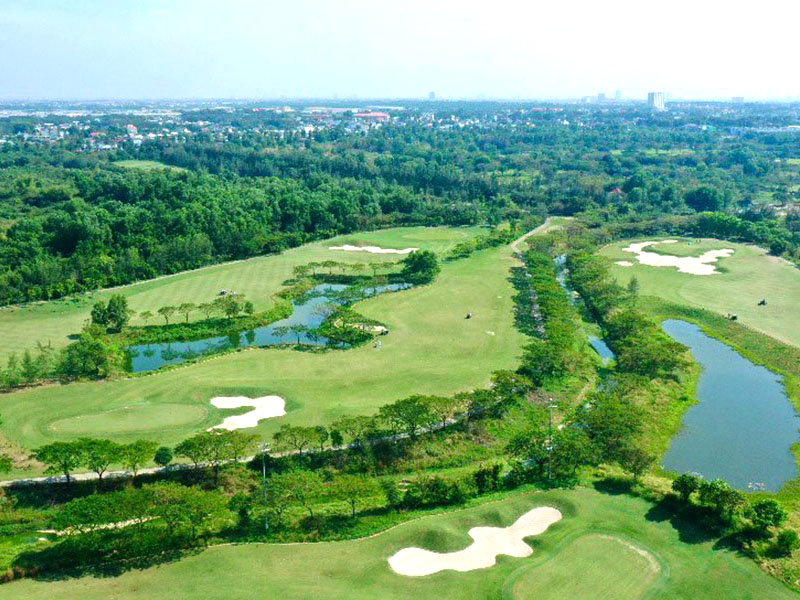
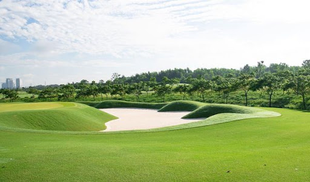
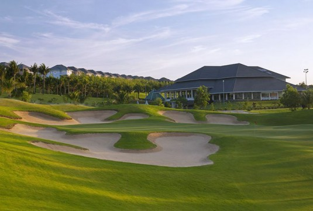
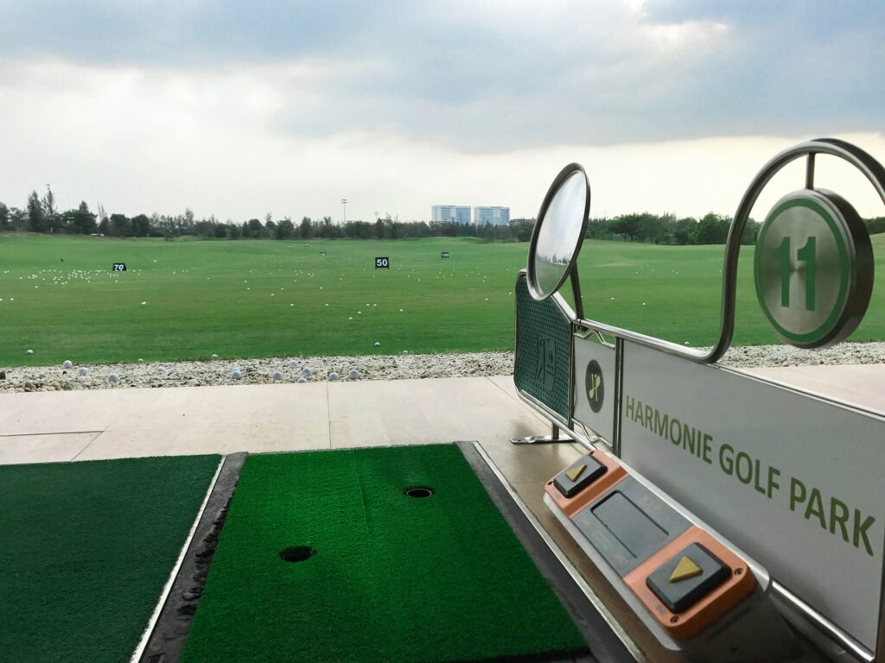

하모니CC는 빈즈엉(Binh Duong) 지역의 프리미엄 18홀 골프장으로, 세련된 코스 설계와 완벽한 코스 컨디션, 고급스러운 시설을 갖춘 호치민 근교 최고급 골프장 중 하나입니다. “정교함과 난이도의 조화”라는 이름에 걸맞게 하모니CC는 다양한 전략적 요소와 아름다운 조경을 갖추어 중·상급 골퍼들의 만족도가 특히 높은 코스입니다.

하모니CC는 **18홀 챔피언십 코스**로 구성되어 있으며, 페어웨이는 넓고 개방감이 있으면서도 곳곳에 배치된 벙커와 워터 해저드가 전략적인 난이도를 제공합니다. 티에서 그린까지 이어지는 라인은 깔끔하고 시야가 좋으며, 그린은 속도가 빠르고 언듈레이션이 있어 퍼팅의 정교함을 요구합니다.
코스 전체가 매우 고급스럽게 관리되고 있어 날씨에 상관없이 안정적이고 쾌적한 플레이가 가능한 것이 많은 골퍼들이 꼽는 하모니CC의 가장 큰 장점입니다.
하모니CC는 호치민 시내에서 차량으로 약 **45~60분** 정도 거리로, 접근성이 뛰어나 하루 라운딩 코스로 가장 많이 선택되는 골프장 중 하나입니다. 고급 주거지역에 위치해 있어 주변 환경이 조용하고 쾌적하며, 전체적인 분위기가 매우 프리미엄하다는 평가를 받습니다.
하모니CC의 클럽하우스는 호텔급 시설을 갖추고 있으며 라운지, 락커룸, 샤워실, 사우나, 프로샵 등 모든 편의시설이 매우 깔끔하고 고급스럽게 유지되고 있습니다. 넓고 현대적인 인테리어가 라운딩 전후 휴식을 더욱 편안하게 만들어 줍니다.
레스토랑은 한국인 골퍼에게 맞춘 메뉴를 포함해 다양한 아시아식 요리를 제공하며, 맛과 위생, 서비스 모두 높은 평가를 받고 있습니다. 캐디 서비스 또한 매우 전문적이며, 거리 측정과 라인 읽기 능력이 뛰어나 플레이 안정성에 큰 도움을 줍니다.
하모니CC는 ‘호치민 근교 고급 골프장’, ‘프리미엄 18홀 골프장’, ‘완벽한 코스 관리’ 등의 키워드로 자주 언급되는 인기 골프장입니다. 라운딩의 질, 시설, 서비스, 접근성 모두 뛰어난 완성도를 자랑합니다.
고급스러운 분위기와 완성도 높은 코스를 찾는 골퍼분들께 하모니CC는 최상의 선택이 될 것입니다. 그린피, 픽업 서비스, 예약 관련 문의는 언제든 편하게 상담해 주세요.
